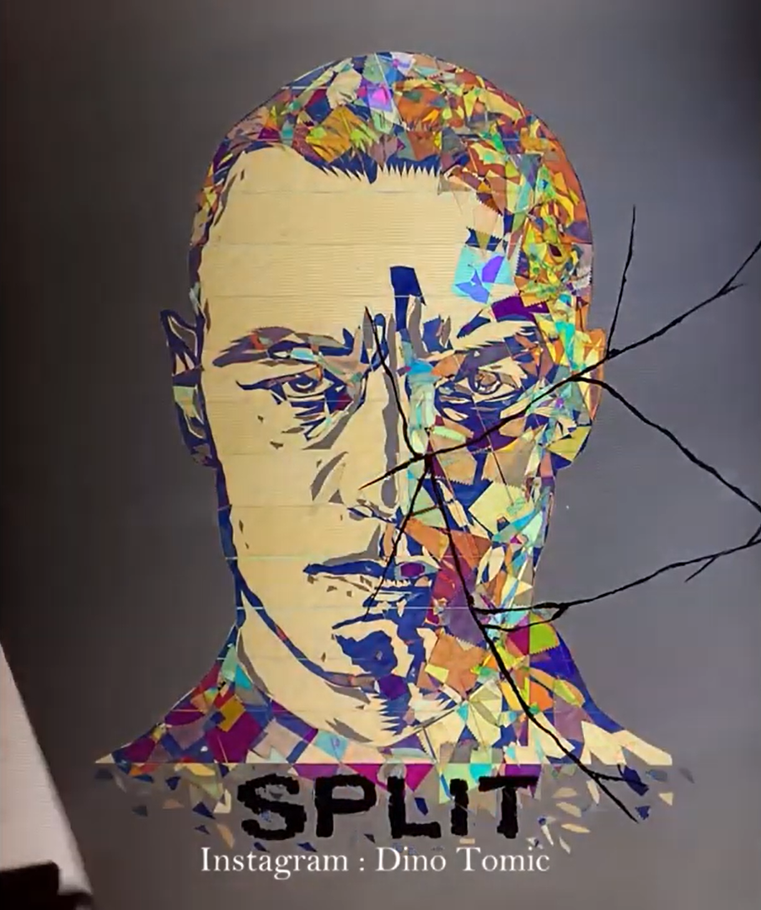
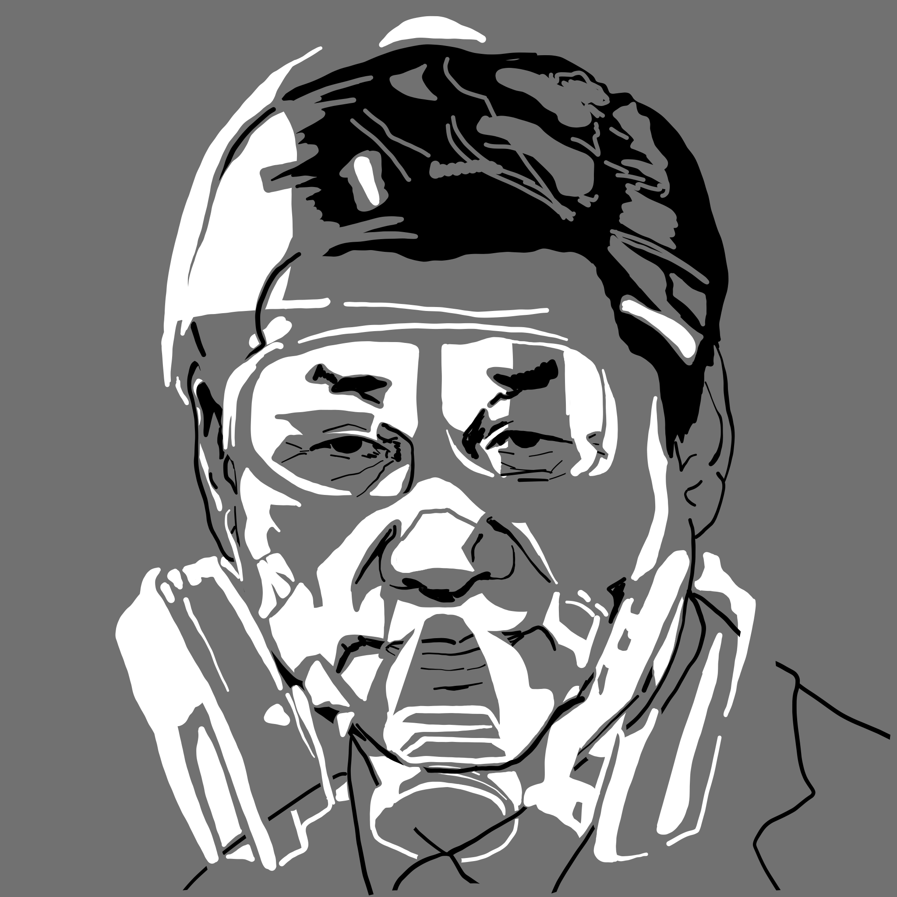
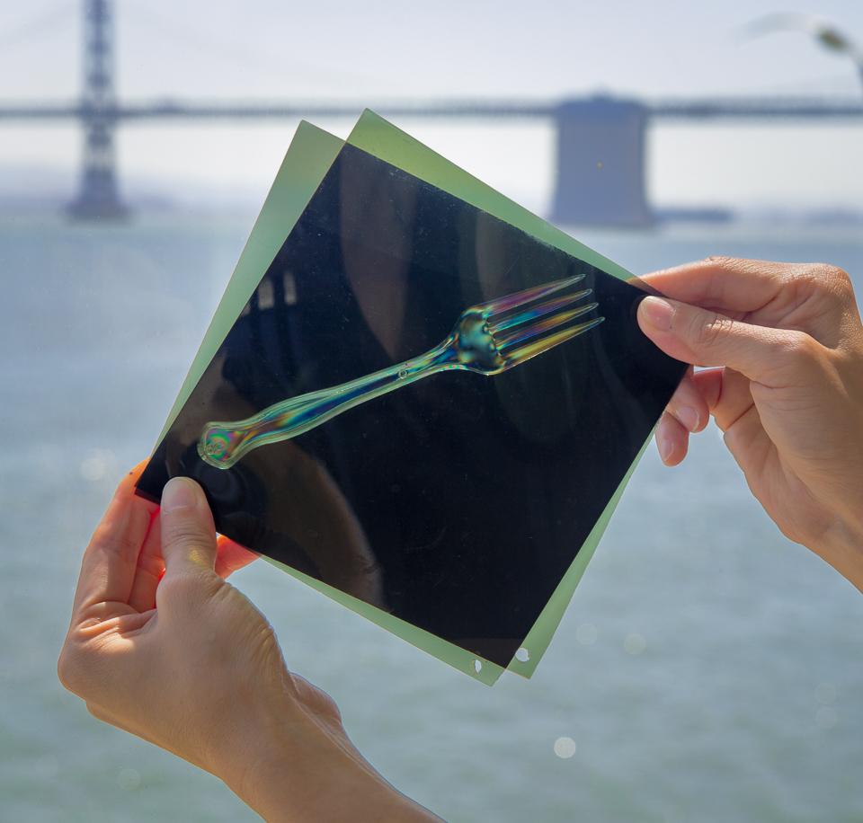
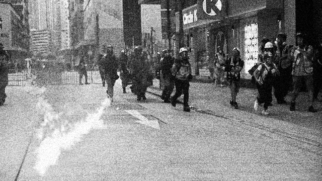
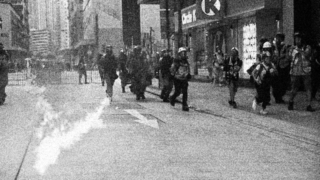
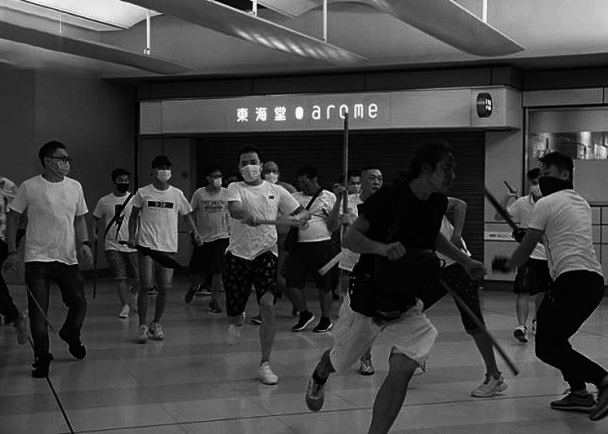
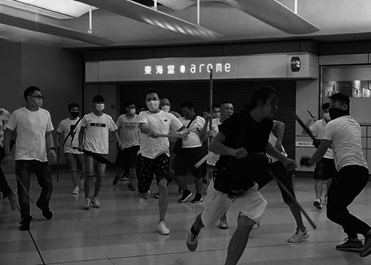

Process
Research
1. Infographic design from Local Studio HK
This is a Facebook page active in the local affairs. The artist claimed that Hong Kong is different from China. The contrasting information defines Hong Kong's independences clearly. The contrasting techniques is old but still works today.
This is a Facebook page active in the local affairs. The artist claimed that Hong Kong is different from China. The contrasting information defines Hong Kong's independences clearly. The contrasting techniques is old but still works today.

2. Polarized portrait by Dino Tomic
He use transparent tapes to organise the polarising direction of light. The outcome of his work is the portrait of Kevin from the movie 'Split'. In the very beginning of this project, I have been thinking about having the protester wearing a mask in the canvas, as they are what we remember of the movement. Dino Tomic is a professional character artist, I like the way that he uses tiny shapes to form detailed facial contour. I want to make this project unique. Therefore, I considerd making a collage art that whenever a polarsing filter is used, there are still something on the canvas.
Dino Tomic
Related work - Polarized tape Joker Art
He use transparent tapes to organise the polarising direction of light. The outcome of his work is the portrait of Kevin from the movie 'Split'. In the very beginning of this project, I have been thinking about having the protester wearing a mask in the canvas, as they are what we remember of the movement. Dino Tomic is a professional character artist, I like the way that he uses tiny shapes to form detailed facial contour. I want to make this project unique. Therefore, I considerd making a collage art that whenever a polarsing filter is used, there are still something on the canvas.
Dino Tomic
Related work - Polarized tape Joker Art
Implementation

1. Draw the portrait of the two characters, one in black, another in white.

2. Set medium grey as backgound color so that both black and white vector shape can be seen.
3. By compare the overlapping parts, I am able to make choices of which line/shapes I am keeping.


The bone stress of plastic will affect the transmittance of polarised light. There are two ways to change the transmittance, the first one is to rotate the filter, the second one is to rotate the transparent plastic plate. As the rotation of filter is not static, the only way to ensure the portrait is in binary color is to paste the transparent film in correct rotation in advance.
Transparent Canvas = perpendicular to top polarizer = perpendicular to portrait of protesters
The bone stress of plastic will affect the transmittance of polarised light. There are two ways to change the transmittance, the first one is to rotate the filter, the second one is to rotate the transparent plastic plate. As the rotation of filter is not static, the only way to ensure the portrait is in binary color is to paste the transparent film in correct rotation in advance.
Transparent Canvas = perpendicular to top polarizer = perpendicular to portrait of protesters


 

 
